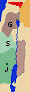
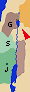
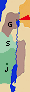
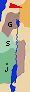

|
|
 Sección 7: El viaje largo. La transfiguración
(Mayo 29- Ago 29)
Sección 7: El viaje largo. La transfiguración
(Mayo 29- Ago 29)
Rehuyendo los dominios de Herodes, y enemistado con los fariseos,
Jesús emprende un largo viaje misionero.
En la región de Tiro y Sidón, accede
al ruego de la cananea: ("También los perros comen las migajas...")
(Mayo 29).
En Decápolis,
cura con saliva a un sordomudo.
De vuelta en Galilea,
cura a muchos enfermos y realiza la
segunda multiplicación de panes. Los farisos le
piden una señal: sólo se les dará la señal de Jonás; previene entonces
a sus discípulos contra
el fermento de los fariseos. En Betsaida,
cura a un ciego
(Jun 29)
y siguen viaje hacia el norte. En Cesárea de Filipo,
Pedro profesa su fe en Cristo, el Hijo de Dios y recibe
la promesa de las llaves; enseguida,
predice su Pasión y Pedro se escandaliza.
Días después, tiene lugar
la Transfiguración en el Monte de Jesús, ante Pedro, Santiago y Juan
(Jul 29).
|
|
| # | Viaje largo: Tiro, Sidón, Decápolis | |||
 # # | El ruego de la cananea: "También los perros comen las migajas..." | |||
|  |  15:21 15:21 Saliendo de allí Jesús se retiró hacia la región de Tiro y de Sidón. Saliendo de allí Jesús se retiró hacia la región de Tiro y de Sidón.15:22 En esto, una mujer cananea, que había salido de aquel territorio, gritaba diciendo: «¡Ten piedad de mí, Señor, hijo de David! Mi hija está malamente endemoniada.» 15:23 Pero él no le respondió palabra. Sus discípulos, acercándose, le rogaban: «Concédeselo, que viene gritando detrás de nosotros.» 15:24 Respondió él: «No he sido enviado más que a las ovejas perdidas de la casa de Israel.» 15:25 Ella, no obstante, vino a postrarse ante él y le dijo: «¡Señor, socórreme!» 15:26 El respondió: «No está bien tomar el pan de los hijos y echárselo a los perritos.» 15:27 «Sí, Señor - repuso ella -, pero también los perritos comen de las migajas que caen de la mesa de sus amos.» 15:28 Entonces Jesús le respondió: «Mujer, grande es tu fe; que te suceda como deseas.» Y desde aquel momento quedó curada su hija.  |
7:24 Y partiendo de allí, se fue a la región de Tiro, y entrando en una casa quería que nadie lo supiese, pero no logró pasar inadvertido, 7:25 sino que, en seguida, habiendo oído hablar de él una mujer, cuya hija estaba poseída de un espíritu inmundo, vino y se postró a sus pies. 7:26 Esta mujer era pagana, sirofenicia de nacimiento, y le rogaba que expulsara de su hija al demonio. 7:27 El le decía: «Espera que primero se sacien los hijos, pues no está bien tomar el pan de los hijos y echárselo a los perritos.» 7:28 Pero ella le respondió: «Sí, Señor; que también los perritos comen bajo la mesa migajas de los niños.» 7:29 El, entonces, le dijo: «Por lo que has dicho, vete; el demonio ha salido de tu hija.» 7:30 Volvió a su casa y encontró que la niña estaba echada en la cama y que el demonio se había ido. |
||
| # | Curación con saliva de un sordomudo | |||
|  | 7:31 Se marchó de la región de Tiro y vino de nuevo, por Sidón, al mar de Galilea, atravesando la Decápolis. 7:32 Le presentan un sordo que, además, hablaba con dificultad, y le ruegan imponga la mano sobre él. 7:33 El, apartándole de la gente, a solas, le metió sus dedos en los oídos y con su saliva le tocó la lengua. 7:34 Y, levantando los ojos al cielo, dio un gemido, y le dijo: «Effatá», que quiere decir: «¡Abrete!» 7:35 Se abrieron sus oídos y, al instante, se soltó la atadura de su lengua y hablaba correctamente. 7:36 Jesús les mandó que a nadie se lo contaran. Pero cuanto más se lo prohibía, tanto más ellos lo publicaban. 7:37 Y se maravillaban sobremanera y decían «Todo lo ha hecho bien; hace oír a los sordos y hablar a los mudos.» |
|||
| # | De vuelta en Galilea: Curación de muchos enfermos | |||
| 15:29 Pasando de allí Jesús vino junto al mar de Galilea; subió al monte y se sentó allí. 15:30 Y se le acercó mucha gente trayendo consigo cojos, lisiados, ciegos, mudos y otros muchos; los pusieron a sus pies, y él los curó. 15:31 De suerte que la gente quedó maravillada al ver que los mudos hablaban, los lisiados quedaban curados, los cojos caminaban y los ciegos veían; y glorificaron al Dios de Israel. |
||||
| # | Segunda multiplicación de panes | |||
| 15:32 Jesús llamó a sus discípulos y les dijo: «Siento compasión de la gente, porque hace ya tres días que permanecen conmigo y no tienen qué comer. Y no quiero despedirlos en ayunas, no sea que desfallezcan en el camino.» 15:33 Le dicen los discípulos: «¿Cómo hacernos en un desierto con pan suficiente para saciar a una multitud tan grande?» 15:34 Díceles Jesús: «¿Cuántos panes tenéis?» Ellos dijeron: «Siete, y unos pocos pececillos.» 15:35 El mandó a la gente acomodarse en el suelo. 15:36 Tomó luego los siete panes y los peces y, dando gracias, los partió e iba dándolos a los discípulos, y los discípulos a la gente. 15:37 Comieron todos y se saciaron, y de los trozos sobrantes recogieron siete espuertas llenas. 15:38 Y los que habían comido eran 4.000 hombres, sin contar mujeres y niños. 15:39 Despidiendo luego a la muchedumbre, subió a la barca, y se fue al término de Magadán. |
8:1 Por aquellos días, habiendo de nuevo mucha gente y no teniendo qué comer, llama Jesús a sus discípulos y les dice: 8:2 «Siento compasión de esta gente, porque hace ya tres días que permanecen conmigo y no tienen qué comer. 8:3 Si los despido en ayunas a sus casas, desfallecerán en el camino, y algunos de ellos han venido de lejos.» 8:4 Sus discípulos le respondieron: «¿Cómo podrá alguien saciar de pan a éstos aquí en el desierto?» 8:5 El les preguntaba: «¿Cuántos panes tenéis?» Ellos le respondieron: «Siete.» 8:6 Entonces él mandó a la gente acomodarse sobre la tierra y, tomando los siete panes y dando gracias, los partió e iba dándolos a sus discípulos para que los sirvieran, y ellos los sirvieron a la gente. 8:7 Tenían también unos pocos pececillos. Y, pronunciando la bendición sobre ellos, mandó que también los sirvieran. 8:8 Comieron y se saciaron, y recogieron de los trozos sobrantes siete espuertas. 8:9 Fueron unos 4.000; y Jesús los despidió. 8:10 Subió a continuación a la barca con sus discípulos y se fue a la región de Dalmanutá. |
|||
| # | La generación mala pide una señal | |||
|  | 16:1 Se acercaron los fariseos y saduceos y, para ponerle a prueba, le pidieron que les mostrase una señal del cielo. 16:2 Mas él les respondió: «Al atardecer decís: "Va a hacer buen tiempo, porque el cielo tiene un rojo de fuego", 16:3 y a la mañana:' Hoy habrá tormenta, porque el cielo tiene un rojo sombrío." ¡Conque sabéis discernir el aspecto del cielo y no podéis discernir las señales de los tiempos! 16:4 ¡Generación malvada y adúltera! Una señal pide y no se le dará otra señal que la señal de Jonás.» Y dejándolos, se fue. |
8:11 Y salieron los fariseos y comenzaron a discutir con él, pidiéndole una señal del cielo, con el fin de ponerle a prueba. 8:12 Dando un profundo gemido desde lo íntimo de su ser, dice: «¿Por qué esta generación pide una señal? Yo os aseguro: no se dará, a esta generación ninguna señal.» 8:13 Y, dejándolos, se embarcó de nuevo, y se fue a la orilla opuesta. |
||
| # | El fermento de los fariseos | |||
| 16:5 Los discípulos, al pasar a la otra orilla, se habían olvidado de tomar panes. 16:6 Jesús les dijo: «Abrid los ojos y guardaos de la levadura de los fariseos y saduceos.» 16:7 Ellos hablaban entre sí diciendo: «Es que no hemos traído panes.» 16:8 Mas Jesús, dándose cuenta, dijo: «Hombres de poca fe, ¿por qué estáis hablando entre vosotros de que no tenéis panes? 16:9 ¿Aún no comprendéis, ni os acordáis de los cinco panes de los 5.000 hombres, y cuántos canastos recogisteis? 16:10 ¿Ni de los siete panes de los 4.000, y cuántas espuertas recogisteis? 16:11 ¿Cómo no entendéis que no me refería a los panes? Guardaos, sí, de la levadura de los fariseos y saduceos.» 16:12 Entonces comprendieron que no había querido decir que se guardasen de la levadura de los panes, sino de la doctrina de los fariseos y saduceos. |
8:14 Se habían olvidado de tomar panes, y no llevaban consigo en la barca más que un pan. 8:15 El les hacía esta advertencia: «Abrid los ojos y guardaos de la levadura de los fariseos y de la levadura de Herodes.» 8:16 Ellos hablaban entre sí que no tenían panes. 8:17 Dándose cuenta, les dice: «¿Por qué estáis hablando de que no tenéis panes? ¿Aún no comprendéis ni entendéis? ¿Es que tenéis la mente embotada? 8:18 ¿Teniendo ojos no véis y teniendo oídos no oís? ¿No os acordáis de 8:19 cuando partí los cinco panes para los 5.000? ¿Cuántos canastos llenos de trozos recogisteis?» «Doce», le dicen. 8:20 «Y cuando partí los siete entre los 4.000, ¿cuántas espuertas llenas de trozos recogisteis?» Le dicen: «Siete.» 8:21 Y continuó: «¿Aún no entendéis?» |
|||
| # | Curación del ciego de Betsaida | |||
| 8:22 Llegan a Betsaida. Le presentan un ciego y le suplican que le toque. 8:23 Tomando al ciego de la mano, le sacó fuera del pueblo, y habiéndole puesto saliva en los ojos, le impuso las manos y le preguntaba: «¿Ves algo?» 8:24 El, alzando la vista, dijo: «Veo a los hombres, pues los veo como árboles, pero que andan.» 8:25 Después, le volvió a poner las manos en los ojos y comenzó a ver perfectamente y quedó curado, de suerte que veía de lejos claramente todas las cosas. 8:26 Y le envió a su casa, diciéndole: «Ni siquiera entres en el pueblo.» |
||||
| # | Confesión de Pedro y su primado | |||
|  | 16:13 Llegado Jesús a la región de Cesarea de Filipo, hizo esta pregunta a sus discípulos: «¿Quién dicen los hombres que es el Hijo del hombre?» 16:14 Ellos dijeron: «Unos, que Juan el Bautista; otros, que Elías, otros, que Jeremías o uno de los profetas.» 16:15 Díceles él: «Y vosotros ¿quién decís que soy yo?» 16:16 Simón Pedro contestó: «Tú eres el Cristo, el Hijo de Dios vivo.» 16:17 Replicando Jesús le dijo: «Bienaventurado eres Simón, hijo de Jonás, porque no te ha revelado esto la carne ni la sangre, sino mi Padre que está en los cielos. 16:18 Y yo a mi vez te digo que tú eres Pedro, y sobre esta piedra edificaré mi Iglesia, y las puertas del Hades no prevalecerán contra ella. 16:19 A ti te daré las llaves del Reino de los Cielos; y lo que ates en la tierra quedará atado en los cielos, y lo que desates en la tierra quedará desatado en los cielos.» 16:20 Entonces mandó a sus discípulos que no dijesen a nadie que él era el Cristo. |
8:27 Salió Jesús con sus discípulos hacia los pueblos de Cesarea de Filipo, y por el camino hizo esta pregunta a sus discípulos: «¿Quién dicen los hombres que soy yo?» 8:28 Ellos le dijeron: «Unos, que Juan el Bautista; otros, que Elías; otros, que uno de los profetas.» 8:29 Y él les preguntaba: «Y vosotros, ¿quién decís que soy yo?» Pedro le contesta: «Tú eres el Cristo.» 8:30 Y les mandó enérgicamente que a nadie hablaran acerca de él. |
9:18 Y sucedió que mientras él estaba orando a solas, se hallaban con él los discípulos y él les preguntó: «¿Quién dice la gente que soy yo?» 9:19 Ellos respondieron: «Unos, que Juan el Bautista; otros, que Elías; otros, que un profeta de los antiguos había resucitado.» 9:20 Les dijo: «Y vosotros, ¿quién decís que soy yo?» Pedro le contestó: «El Cristo de Dios.» 9:21 Pero les mandó enérgicamente que no dijeran esto a nadie. |
|
| # | Primera predicción de la Pasión | |||
| 16:21 Desde entonces comenzó Jesús a manifestar a sus discípulos que él debía ir a Jerusalén y sufrir mucho de parte de los ancianos, los sumos sacerdotes y los escribas, y ser matado y resucitar al tercer día. 16:22 Tomándole aparte Pedro, se puso a reprenderle diciendo: «¡Lejos de ti, Señor! ¡De ningún modo te sucederá eso!»16:23 Pero él, volviéndose, dijo a Pedro: «¡Quítate de mi vista, Satanás! ¡Escándalo eres para mí, porque tus pensamientos no son los de Dios, sino los de los hombres! |
8:31 Y comenzó a enseñarles que el Hijo del hombre debía sufrir mucho y ser reprobado por los ancianos, los sumos sacerdotes y los escribas, ser matado y resucitar a los tres días. 8:32 Hablaba de esto abiertamente. Tomándole aparte, Pedro, se puso a reprenderle. 8:33 Pero él, volviéndose y mirando a sus discípulos, reprendió a Pedro, diciéndole: «¡Quítate de mi vista, Satanás! porque tus pensamientos no son los de Dios, sino los de los hombres.» |
9:22 Dijo: «El Hijo del hombre debe sufrir mucho, y ser reprobado por los ancianos, los sumos sacerdotes y los escribas, ser matado y resucitar al tercer día.» |
||
| # | Seguir a Cristo con la cruz; anuncio del reino próximo | |||
| 16:24 Entonces dijo Jesús a sus discípulos: «Si alguno quiere venir en pos de mí, niéguese a sí mismo, tome su cruz y sígame. 16:25 Porque quien quiera salvar su vida, la perderá, pero quien pierda su vida por mí, la encontrará. 16:26 Pues ¿de qué le servirá al hombre ganar el mundo entero, si arruina su vida? O ¿qué puede dar el hombre a cambio de su vida?16:27 «Porque el Hijo del hombre ha de venir en la gloria de su Padre, con sus ángeles, y entonces pagará a cada uno según su conducta. 16:28 Yo os aseguro: entre los aquí presentes hay algunos que no gustarán la muerte hasta que vean al Hijo del hombre venir en su Reino.» |
8:34 Llamando a la gente a la vez que a sus discípulos, les dijo: «Si alguno quiere venir en pos de mí, niéguese a sí mismo, tome su cruz y sígame. 8:35 Porque quien quiera salvar su vida, la perderá; pero quien pierda su vida por mí y por el Evangelio, la salvará. 8:36 Pues ¿de qué le sirve al hombre ganar el mundo entero si arruina su vida? 8:37 Pues ¿qué puede dar el hombre a cambio de su vida? 8:38 Porque quien se avergüence de mí y de mis palabras en esta generación adúltera y pecadora, también el Hijo del hombre se avergonzará de él cuando venga en la gloria de su Padre con los santos ángeles.» 9:1 Les decía también: «Yo os aseguro que entre los aquí presentes hay algunos que no gustarán la muerte hasta que vean venir con poder el Reino de Dios.» |
9:23 Decía a todos: «Si alguno quiere venir en pos de mí, niéguese a sí mismo, tome su cruz cada día, y sígame. 9:24 Porque quien quiera salvar su vida, la perderá; pero quien pierda su vida por mí, ése la salvará. 9:25 Pues, ¿de qué le sirve al hombre haber ganado el mundo entero, si él mismo se pierde o se arruina? 9:26 Porque quien se avergüence de mí y de mis palabras, de ése se avergonzará el Hijo del hombre, cuando venga en su gloria, en la de su Padre y en la de los santos ángeles. 9:27 «Pues de verdad os digo que hay algunos, entre los aquí presentes, que no gustarán la muerte hasta que vean el Reino de Dios.» |
||
| # | La Transfiguración | |||
| 17:1 Seis días después, toma Jesús consigo a Pedro, a Santiago y a su hermano Juan, y los lleva aparte, a un monte alto. 17:2 Y se transfiguró delante de ellos: su rostro se puso brillante como el sol y sus vestidos se volvieron blancos como la luz. 17:3 En esto, se les aparecieron Moisés y Elías que conversaban con él. 17:4 Tomando Pedro la palabra, dijo a Jesús: «Señor, bueno es estarnos aquí. Si quieres, haré aquí tres tiendas, una para ti, otra para Moisés y otra para Elías.» 17:5 Todavía estaba hablando, cuando una nube luminosa los cubrió con su sombra y de la nube salía una voz que decía: «Este es mi Hijo amado, en quien me complazco; escuchadle.»17:6 Al oír esto los discípulos cayeron rostro en tierra llenos de miedo. 17:7 Mas Jesús, acercándose a ellos, los tocó y dijo: «Levantaos, no tengáis miedo.» 17:8 Ellos alzaron sus ojos y ya no vieron a nadie más que a Jesús solo. |
9:2 Seis días después, toma Jesús consigo a Pedro, Santiago y Juan, y los lleva, a ellos solos, aparte, a un monte alto. Y se transfiguró delante de ellos, 9:3 y sus vestidos se volvieron resplandecientes, muy blancos, tanto que ningún batanero en la tierra sería capaz de blanquearlos de ese modo. 9:4 Se les aparecieron Elías y Moisés, y conversaban con Jesús. 9:5 Toma la palabra Pedro y dice a Jesús: «Rabbí, bueno es estarnos aquí. Vamos a hacer tres tiendas, una para ti, otra para Moisés y otra para Elías»; 9:6 - pues no sabía qué responder ya que estaban atemorizados -. 9:7 Entonces se formó una nube que les cubrió con su sombra, y vino una voz desde la nube: «Este es mi Hijo amado, escuchadle.» 9:8 Y de pronto, mirando en derredor, ya no vieron a nadie más que a Jesús solo con ellos. |
9:28 Sucedió que unos ocho días después de estas palabras, tomó consigo a Pedro, Juan y Santiago, y subió al monte a orar. 9:29 Y sucedió que, mientras oraba, el aspecto de su rostro se mudó, y sus vestidos eran de una blancura fulgurante, 9:30 y he aquí que conversaban con él dos hombres, que eran Moisés y Elías; 9:31 los cuales aparecían en gloria, y hablaban de su partida, que iba a cumplir en Jerusalén. 9:32 Pedro y sus compañeros estaban cargados de sueño, pero permanecían despiertos, y vieron su gloria y a los dos hombres que estaban con él.9:33 Y sucedió que, al separarse ellos de él, dijo Pedro a Jesús: «Maestro, bueno es estarnos aquí. Vamos a hacer tres tiendas, una para ti, otra para Moisés y otra para Elías», sin saber lo que decía. 9:34 Estaba diciendo estas cosas cuando se formó una nube y los cubrió con su sombra; y al entrar en la nube, se llenaron de temor. 9:35 Y vino una voz desde la nube, que decía: «Este es mi Hijo, mi Elegido; escuchadle.» 9:36 Y cuando la voz hubo sonado, se encontró Jesús solo. Ellos callaron y, por aquellos días, no dijeron a nadie nada de lo que habían visto. |
||
| # | Retorno del profeta Elías | |||
| 17:9 Y cuando bajaban del monte, Jesús les ordenó: «No contéis a nadie la visión hasta que el Hijo del hombre haya resucitado de entre los muertos.» 17:10 Sus discípulos le preguntaron: «¿Por qué, pues, dicen los escribas que Elías debe venir primero?»17:11 Respondió él: «Ciertamente, Elías ha de venir a restaurarlo todo. 17:12 Os digo, sin embargo: Elías vino ya, pero no le reconocieron sino que hicieron con él cuanto quisieron. Así también el Hijo del hombre tendrá que padecer de parte de ellos.» 17:13 Entonces los discípulos comprendieron que se refería a Juan el Bautista. |
9:9 Y cuando bajaban del monte les ordenó que a nadie contasen lo que habían visto hasta que el Hijo del hombre resucitara de entre los muertos. 9:10 Ellos observaron esta recomendación, discutiendo entre sí qué era eso de «resucitar de entre los muertos.» 9:11 Y le preguntaban: «¿Por qué dicen los escribas que Elías debe venir primero?» 9:12 El les contestó: «Elías vendrá primero y restablecerá todo; mas, ¿cómo está escrito del Hijo del hombre que sufrirá mucho y que será despreciado? 9:13 Pues bien, yo os digo: Elías ha venido ya y han hecho con él cuanto han querido, según estaba escrito de él.» |
|||
| # | Curación de un niño poseído "Creo, ayuda a mi poca fe" | |||
| 17:14 Cuando llegaron donde la gente, se acercó a él un hombre que, arrodillándose ante él, 17:15 le dijo: «Señor, ten piedad de mi hijo, porque es lunático y está mal; pues muchas veces cae en el fuego y muchas en el agua. 17:16 Se lo he presentado a tus discípulos, pero ellos no han podido curarle.» 17:17 Jesús respondió: «¡Oh generación incrédula y perversa! ¿Hasta cuándo estaré con vosotros? ¿Hasta cuándo habré de soportaros? ¡Traédmelo acá! 17:18 Jesús le increpó y el demonio salió de él; y quedó sano el niño desde aquel momento.17:19 Entonces los discípulos se acercaron a Jesús, en privado, y le dijeron: «¿Por qué nosotros no pudimos expulsarle? 17:20 Díceles: «Por vuestra poca fe. Porque yo os aseguro: si tenéis fe como un grano de mostaza, diréis a este monte: "Desplázate de aquí allá", y se desplazará, y nada os será imposible. 17:21 Pero esta clase no sale sino con oración y ayuno.» |
9:14 Al llegar donde los discípulos, vio a mucha gente que les rodeaba y a unos escribas que discutían con ellos. 9:15 Toda la gente, al verle, quedó sorprendida y corrieron a saludarle. 9:16 El les preguntó: «¿De qué discutís con ellos?» 9:17 Uno de entre la gente le respondió: «Maestro, te he traído a mi hijo que tiene un espíritu mudo 9:18 y, dondequiera que se apodera de él, le derriba, le hace echar espumarajos, rechinar de dientes y le deja rígido. He dicho a tus discípulos que lo expulsaran, pero no han podido.» 9:19 El les responde: «¡Oh generación incrédula! ¿Hasta cuándo estaré con vosotros? ¿Hasta cuándo habré de soportaros? ¡Traédmelo!» 9:20 Y se lo trajeron. Apenas el espíritu vio a Jesús, agitó violentamente al muchacho y, cayendo en tierra, se revolcaba echando espumarajos. 9:21 Entonces él preguntó a su padre: «¿Cuánto tiempo hace que le viene sucediendo esto?» Le dijo: «Desde niño. 9:22 Y muchas veces le ha arrojado al fuego y al agua para acabar con él; pero, si algo puedes, ayúdanos, compadécete de nosotros.» 9:23 Jesús le dijo: «¡Qué es eso de si puedes! ¡Todo es posible para quien cree!» 9:24 Al instante, gritó el padre del muchacho: «¡Creo, ayuda a mi poca fe!» 9:25 Viendo Jesús que se agolpaba la gente, increpó al espíritu inmundo, diciéndole: «Espíritu sordo y mudo, yo te lo mando: sal de él y no entres más en él.» 9:26 Y el espíritu salió dando gritos y agitándole con violencia. El muchacho quedó como muerto, hasta el punto de que muchos decían que había muerto. 9:27 Pero Jesús, tomándole de la mano, le levantó y él se puso en pie. 9:28 Cuando Jesús entró en casa, le preguntaban en privado sus discípulos: «¿Por qué nosotros no pudimos expulsarle?» 9:29 Les dijo: «Esta clase con nada puede ser arrojada sino con la oración.» |
9:37 Sucedió que al día siguiente, cuando bajaron del monte, le salió al encuentro mucha gente. 9:38 En esto, un hombre de entre la gente empezó a gritar: «Maestro, te suplico que mires a mi hijo, porque es el único que tengo, 9:39 y he aquí que un espíritu se apodera de él y de pronto empieza a dar gritos, le hace retorcerse echando espuma, y difícilmente se aparta de él, dejándole quebrantado. 9:40 He pedido a tus discípulos que lo expulsaran, pero no han podido.» 9:41 Respondió Jesús: «¡Oh generación incrédula y perversa! ¿Hasta cuándo estaré con vosotros y habré de soportaros? ¡Trae acá a tu hijo!» 9:42 Cuando se acercaba, el demonio le arrojó por tierra y le agitó violentamente; pero Jesús increpó al espíritu inmundo, curó al niño y lo devolvió a su padre; |
||
| # | Nueva predicción de la Pasión | |||
| 17:22 Yendo un día juntos por Galilea, les dijo Jesús: «El Hijo del hombre va a ser entregado en manos de los hombres; 17:23 le matarán, y al tercer día resucitará.» Y se entristecieron mucho. |
9:30 Y saliendo de allí, iban caminando por Galilea; él no quería que se supiera, 9:31 porque iba enseñando a sus discípulos. Les decía: «El Hijo del hombre será entregado en manos de los hombres; le matarán y a los tres días de haber muerto resucitará.» 9:32 Pero ellos no entendían lo que les decía y temían preguntarle. |
9:43 y todos quedaron atónitos ante la grandeza de Dios. Estando todos maravillados por todas las cosas que hacía, dijo a sus discípulos: 9:44 «Poned en vuestros oídos estas palabras: el Hijo del hombre va a ser entregado en manos de los hombres.»9:45 Pero ellos no entendían lo que les decía; les estaba velado de modo que no lo comprendían y temían preguntarle acerca de este asunto. |
||
| # | El pago del impuesto | |||
| 17:24 Cuando entraron en Cafarnaúm, se acercaron a Pedro los que cobraban el didracma y le dijeron: «¿No paga vuestro Maestro el didracma?» 17:25 Dice él: «Sí.» Y cuando llegó a casa, se anticipó Jesús a decirle: «¿Qué te parece, Simón?; los reyes de la tierra, ¿de quién cobran tasas o tributo, de sus hijos o de los extraños?» 17:26 Al contestar él: «De los extraños», Jesús le dijo: «Por tanto, libres están los hijos. 17:27 Sin embargo, para que no les sirvamos de escándalo, vete al mar, echa el anzuelo, y el primer pez que salga, cógelo, ábrele la boca y encontrarás un estáter. Tómalo y dáselo por mí y por ti.» |
||||
| # | El escándalo | |||
| 18:1 En aquel momento se acercaron a Jesús los discípulos y le dijeron: «¿Quién es, pues, el mayor en el Reino de los Cielos?» 18:2 El llamó a un niño, le puso en medio de ellos 18:3 y dijo: «Yo os aseguro: si no cambiáis y os hacéis como los niños, no entraréis en el Reino de los Cielos. 18:4 Así pues, quien se haga pequeño como este niño, ése es el mayor en el Reino de los Cielos. 18:5 «Y el que reciba a un niño como éste en mi nombre, a mí me recibe. 18:6 Pero al que escandalice a uno de estos pequeños que creen en mí, más le vale que le cuelguen al cuello una de esas piedras de molino que mueven los asnos, y le hundan en lo profundo del mar. 18:7 ¡Ay del mundo por los escándalos! Es forzoso, ciertamente, que vengan escándalos, pero ¡ay de aquel hombre por quien el escándalo viene!18:8 «Si, pues, tu mano o tu pie te es ocasión de pecado, córtatelo y arrójalo de ti; más te vale entrar en la Vida manco o cojo que, con las dos manos o los dos pies, ser arrojado en el fuego eterno. 18:9 Y si tu ojo te es ocasión de pecado, sácatelo y arrójalo de ti; más te vale entrar en la Vida con un solo ojo que, con los dos ojos, ser arrojado a la gehenna del fuego. 18:10 «Guardaos de menospreciar a uno de estos pequeños; porque yo os digo que sus ángeles, en los cielos, ven continuamente el rostro de mi Padre que está en los cielos.18:11 Porque el Hijo del Hombre ha venido a salvar lo que se había perdido. 18:12 ¿Qué os parece? Si un hombre tiene cien ovejas y se le descarría una de ellas, ¿no dejará en los montes las noventa y nueve, para ir en busca de la descarriada? 18:13 Y si llega a encontrarla, os digo de verdad que tiene más alegría por ella que por las 99 no descarriadas. 18:14 De la misma manera, no es voluntad de vuestro Padre del cielo que se pierda uno solo de estos pequeños. 10:40 «Quien a vosotros recibe, a mí me recibe, y quien me recibe a mí, recibe a Aquel que me ha enviado.10:41 «Quien reciba a un profeta por ser profeta, recompensa de profeta recibirá, y quien reciba a un justo por ser justo, recompensa de justo recibirá. 10:42 «Y todo aquel que dé de beber tan sólo un vaso de agua fresca a uno de estos pequeños, por ser discípulo, os aseguro que no perderá su recompensa.» |
9:33 Llegaron a Cafarnaúm, y una vez en casa, les preguntaba: «¿De qué discutíais por el camino?» 9:34 Ellos callaron, pues por el camino habían discutido entre sí quién era el mayor. 9:35 Entonces se sentó, llamó a los Doce, y les dijo: «Si uno quiere ser el primero, sea el último de todos y el servidor de todos.» 9:36 Y tomando un niño, le puso en medio de ellos, le estrechó entre sus brazos y les dijo: 9:37 «El que reciba a un niño como éste en mi nombre, a mí me recibe; y el que me reciba a mí, no me recibe a mí sino a Aquel que me ha enviado.»9:38 Juan le dijo: «Maestro, hemos visto a uno que expulsaba demonios en tu nombre y no viene con nosotros y tratamos de impedírselo porque no venía con nosotros.» 9:39 Pero Jesús dijo: «No se lo impidáis, pues no hay nadie que obre un milagro invocando mi nombre y que luego sea capaz de hablar mal de mí. 9:40 Pues el que no está contra nosotros, está por nosotros.» 9:41 «Todo aquel que os dé de beber un vaso de agua por el hecho de que sois de Cristo, os aseguro que no perderá su recompensa.» 9:42 «Y al que escandalice a uno de estos pequeños que creen, mejor le es que le pongan al cuello una de esas piedras de molino que mueven los asnos y que le echen al mar.9:43 Y si tu mano te es ocasión de pecado, córtatela. Más vale que entres manco en la Vida que, con las dos manos, ir a la gehenna, al fuego que no se apaga. 9:44 donde su gusano no muere y el fuego no se apaga; 9:45 Y si tu pie te es ocasión de pecado, córtatelo. Más vale que entres cojo en la Vida que, con los dos pies, ser arrojado a la gehenna. 9:46 donde su gusano no muere y el fuego no se apaga; 9:47 Y si tu ojo te es ocasión de pecado, sácatelo. Más vale que entres con un solo ojo en el Reino de Dios que, con los dos ojos, ser arrojado a la gehenna, 9:48 donde su gusano no muere y el fuego no se apaga; 9:49 pues todos han de ser salados con fuego. |
9:46 Se suscitó una discusión entre ellos sobre quién de ellos sería el mayor. 9:47 Conociendo Jesús lo que pensaban en su corazón, tomó a un niño, le puso a su lado, 9:48 y les dijo: «El que reciba a este niño en mi nombre, a mí me recibe; y el que me reciba a mí, recibe a Aquel que me ha enviado; pues el más pequeño de entre vosotros, ése es mayor.» 9:49 Tomando Juan la palabra, dijo: «Maestro, hemos visto a uno que expulsaba demonios en tu nombre, y tratamos de impedírselo, porque no viene con nosotros.» 9:50 Pero Jesús le dijo: «No se lo impidáis, pues el que no está contra vosotros, está por vosotros.» 17:1 Dijo a sus discípulos: «Es imposible que no vengan escándalos; pero, ¡ay de aquel por quien vienen!17:2 Más le vale que le pongan al cuello una piedra de molino y sea arrojado al mar, que escandalizar a uno de estos pequeños. |
||
| # | La corrección y el perdón fraterno "Lo que atéis en la tierra ...." | |||
| 18:15 «Si tu hermano llega a pecar, vete y repréndele, a solas tú con él. Si te escucha, habrás ganado a tu hermano. 18:16 Si no te escucha, toma todavía contigo uno o dos, para que todo asunto quede zanjado por la palabra de dos o tres testigos. 18:17 Si les desoye a ellos, díselo a la comunidad. Y si hasta a la comunidad desoye, sea para ti como el gentil y el publicano. 18:18 «Yo os aseguro: todo lo que atéis en la tierra quedará atado en el cielo, y todo lo que desatéis en la tierra quedará desatado en el cielo.18:19 «Os aseguro también que si dos de vosotros se ponen de acuerdo en la tierra para pedir algo, sea lo que fuere, lo conseguirán de mi Padre que está en los cielos. 18:20 Porque donde están dos o tres reunidos en mi nombre, allí estoy yo en medio de ellos.» 18:21 Pedro se acercó entonces y le dijo: «Señor, ¿cuántas veces tengo que perdonar las ofensas que me haga mi hermano? ¿Hasta siete veces?»18:22 Dícele Jesús: «No te digo hasta siete veces, sino hasta setenta veces siete.» |
17:3 Cuidaos de vosotros mismos. «Si tu hermano peca, repréndele; y si se arrepiente, perdónale. 17:4 Y si peca contra ti siete veces al día, y siete veces se vuelve a ti, diciendo: "Me arrepiento", le perdonarás.» |
|||
| # | Parábola del siervo sin misericordia | |||
| 18:23 «Por eso el Reino de los Cielos es semejante a un rey que quiso ajustar cuentas con sus siervos. 18:24 Al empezar a ajustarlas, le fue presentado uno que le debía 10.000 talentos. 18:25 Como no tenía con qué pagar, ordenó el señor que fuese vendido él, su mujer y sus hijos y todo cuanto tenía, y que se le pagase. 18:26 Entonces el siervo se echó a sus pies, y postrado le decía: "Ten paciencia conmigo, que todo te lo pagaré." 18:27 Movido a compasión el señor de aquel siervo, le dejó en libertad y le perdonó la deuda. 18:28 Al salir de allí aquel siervo se encontró con uno de sus compañeros, que le debía cien denarios; le agarró y, ahogándole, le decía: "Paga lo que debes." 18:29 Su compañero, cayendo a sus pies, le suplicaba: "Ten paciencia conmigo, que ya te pagaré." 18:30 Pero él no quiso, sino que fue y le echó en la cárcel, hasta que pagase lo que debía. 18:31 Al ver sus compañeros lo ocurrido, se entristecieron mucho, y fueron a contar a su señor todo lo sucedido. 18:32 Su señor entonces le mandó llamar y le dijo: "Siervo malvado, yo te perdoné a ti toda aquella deuda porque me lo suplicaste. 18:33 ¿No debías tú también compadecerte de tu compañero, del mismo modo que yo me compadecí de ti?" 18:34 Y encolerizado su señor, le entregó a los verdugos hasta que pagase todo lo que le debía. 18:35 Esto mismo hará con vosotros mi Padre del cielo, si no perdonáis de corazón cada uno a vuestro hermano.» |
||||

|